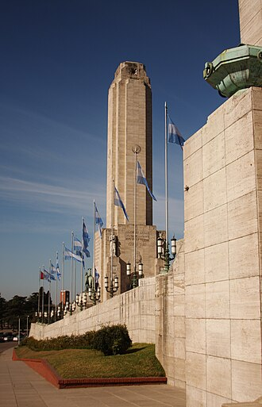

ROSARIO, SANTA FE / CHAMBER OF COMMERCE
Make local connections.
Our membership application will be available soon. In the meantime, explore the directory and meet the businesses in this student chamber project.
Explore the business directory →